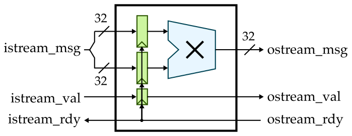
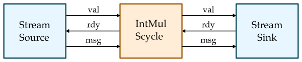

# ECE 4750 Section 2: RTL Testing with Python
Table of Contents
- Overview of Testing Strategies
- Ad-Hoc vs. Assertion Testing
- Testing with pytest
- Testing with Test Vectors
- Testing with Stream Sources and Sinks
- Using Functional-Level Models
This discussion section serves as gentle introduction to the basics of RTL testing using Python. We will start by discussing various different kinds of testing strategies including:
- Ad-Hoc vs. Assertion Testing
- Directed vs. Random Testing
- Black-Box vs. White-Box Testing
- Value vs. Delay Testing
- Unit vs. Integration Testing
- Reference Models
After this discussion you should log into the
ecelinux servers using the remote access option of
your choice and then source the setup script.
% cd $HOME/ece4750/2025F
% git pull
% cd sections/section2
% TOPDIR=$PWD
% mkdir $TOPDIR/buildAd-Hoc vs. Assertion Testing
We will start by testing the simple single-cycle multiplier, we developed in last week’s discussion section which does include any kind of flow control (i.e., no valid/ready signals):

As a reminder, here is the interface for our single-cycle multiplier.
module imul_IntMulScycleV1
(
input logic clk,
input logic reset,
input logic [31:0] in0,
input logic [31:0] in1,
output logic [31:0] out
);Our single-cycle multiplier takes two 32-bit input values and
produces a 32-bit output value. Let’s use the same ad-hoc test we
used last week to test this multiplier. Start by reviewing the
Python test bench located in
imul/imul-v1-adhoc-test.py:
from sys import argv
from pymtl3 import *
from pymtl3.passes.backends.verilog import *
from IntMulScycleV1 import IntMulScycleV1
# Get list of input values from command line
in0_values = [ int(x,0) for x in argv[1::2] ]
in1_values = [ int(x,0) for x in argv[2::2] ]
# Create and elaborate the model
model = IntMulScycleV1()
model.elaborate()
# Apply the Verilog import passes and the default pass group
model.apply( VerilogPlaceholderPass() )
model = VerilogTranslationImportPass()( model )
model.apply( DefaultPassGroup(linetrace=True,textwave=True,vcdwave="imul-v1-adhoc-test") )
# Reset simulator
model.sim_reset()
# Apply input values and display output values
for in0_value,in1_value in zip(in0_values,in1_values):
# Write input value to input port
model.in0 @= in0_value
model.in1 @= in1_value
model.sim_eval_combinational()
# Tick simulator one cycle
model.sim_tick()
# Tick simulator three more cycles and print text wave
model.sim_tick()
model.sim_tick()
model.sim_tick()
model.print_textwave()The test bench gets some input values from the command line, instantiates the design under test, applies some PyMLT3 passes, and then runs a simulation by setting the input values and displaying the output value. Let’s run this ad-hoc test as follows:
% cd $TOPDIR/build
% python ../imul/imul-v1-adhoc-test.py 2 2 3 3Experiment with different input values. Try large values that result in overflow:
% cd $TOPDIR/build
% python ../imul/imul-v1-adhoc-test.py 70000 70000In ad-hoc testing, we try different inputs and inspect the output manually to see if the design under test produces the correct result. This “verification by inspection” is error prone and not reproducible. If you later make a change to your design, you would have to take another look at the debug output and/or waveforms to ensure that your design still works. If another member of your group wants to understand your design and verify that it is working, they would also need to take a look at the debug output and/or waveforms. Ad-hoc testing is usually verbose, which makes it error prone and more cumbersome to write tests. Ad-hoc testing is difficult for others to read and understand since by definition it is ad-hoc. Ad-hoc testing does not use any kind of standard test output, and does not provide support for controlling the amount of test output. While using ad-hoc testing might be feasible for very simple designs, it is obviously not a scalable approach when building the more complicated designs we will tackle in this course.
The first step to improving our testing strategy is to use
assertion testing where we explicitly write assertions
that must be true for the test to pass. This way we have made the
checking for the correct results systematic and automatic. Take a
look at the simple Python test bench for assertion testing located
in imul/imul-v1-assertion-test.py:
def test_basic():
... create and elaborate model ...
... apply Verilog import passes and the default pass group ...
model.sim_reset()
model.in0 @= 2
model.in1 @= 2
model.sim_tick()
assert model.out == 0
def test_basic():
... create and elaborate model ...
... apply Verilog import passes and the default pass group ...
model.sim_reset()
model.in0 @= 0x80000001
model.in1 @= 2
model.sim_tick()
assert model.out == 0
test_basic()
test_overflow()We have structured our assertion testing into a set of test
cases. Each test case is implemented as a Python function
named with the prefix test_. Each test case creates
and elaborates the design under test, applies appropriate passes,
and resets the model. The test case then sets the inputs to the
model, ticks the simulator, and asserts that the output of the
model match the expected value. We explicitly call both test case
functions at the end of the script. Let’s run this assertion
test:
% cd $TOPDIR/build
% python ../imul/imul-v1-assertion-test.pyThe first test case will fail since we have not specified the correct expected value. Modify the assertion test script to have the correct expected values for both test cases and then rerun the assertion test.
Testing with pytest
In this course, we will be using the powerful
pytest unit testing framework. The
pytest framework is popular in the Python programming
community with many features that make it well-suited for
test-driven hardware development including: no-boilerplate testing
with the standard assert statement; automatic test discovery;
helpful traceback and failing assertion reporting; standard output
capture; sophisticated parameterized testing; test marking for
skipping certain tests; distributed testing; and many third-party
plugins. More information is available here:
It is pretty easy to adapt the assertion test script we already
have to make it suitable for use with pytest. Usually
we like to keep all of our tests in a dedicated test
subdirectory. Take a look at the test script
imul/test/IntMulScycleV1a_test.py. It looks exactly
like our previous assertion test script with two changes:
- we pass in
cmdline_optsto each test case function - we do not need to explicitly call the test case functions at the bottom of the script
Let’s use pytest to run this test:
% cd $TOPDIR/build
% pytest ../imul/test/IntMulScycleV1a_test.pyYou can see that pytest has automatically
discovered the two test cases; pytest will assume any
function that starts with the test_ prefix is a test
case. The test cases will fail since we have not specified the
correct expected values. We can use the -v command
line
% cd $TOPDIR/build
% pytest ../imul/test/IntMulScycleV1a_test.py -vWe can then “zoom in” on the first test case using the
-k command line option to run just that first test
case:
% cd $TOPDIR/build
% pytest ../imul/test/IntMulScycleV1a_test.py -v -k test_basicThen we can use the -s option to display the line
trace and the --dump-vcd option to dump the VCD
file.
% cd $TOPDIR/build
% pytest ../imul/test/IntMulScycleV1a_test.py -v -k test_basic -s --dump-vcdModify the test script to have the correct expected values for
both test cases and then rerun the test using
pytest.
Testing with Test Vectors
Our testing so far requires quite a bit of boilerplate code.
Every test case must construct a model, elaborate that model,
apply PyMTL3 passes, and reset the simulator. For every cycle, the
test case must set the inputs, tick the simulator, and check the
outputs. We can use the power of Python to encapsulate much of
this common functionality into a library to simplify testing.
PyMTL3 provides a run_test_vector_sim function that
makes it easy to write these kind of cycle-by-cycle tests where we
want to explicitly set inputs and check outputs every cycle. Take
a look at the test script
imul/test/IntMulScycleV1b_test.py.
def test_basic( cmdline_opts ):
run_test_vector_sim( IntMulScycleV1(), [
('in0 in1 out*'),
[ 2, 2, '?' ],
[ 3, 2, 0 ],
[ 3, 3, 0 ],
[ 0, 0, 0 ],
], cmdline_opts )
def test_overflow( cmdline_opts ):
run_test_vector_sim( IntMulScycleV1(), [
('in0 in1 out*'),
[ 0x80000001, 2, '?' ],
[ 0xc0000002, 4, 0 ],
[ 0x00000000, 0, 0 ],
], cmdline_opts )The run_test_vector_sim takes three arguments: a
design under test, the test vector table, and the command line
options. The first row in the test vector table specifies the
names of the input and output ports. Output ports need to be
indicated by adding a * suffix. The remaining rows in
the test vector table specify the inputs and the correct outputs
for every cycle. We can indicate we don’t care about an output on
a given cycle with ?. Notice how Python can make
things very compact while at the same time very readable. Let’s
use pytest to run this test:
% cd $TOPDIR/build
% pytest ../imul/test/IntMulScycleV1b_test.py -s -vThe test cases will fail since we have not specified the
correct expected values. Modify the test script to have the
correct expected values for both test cases and then rerun the
test using pytest. Use the -v and
-s options and notice that the line trace roughly
corresponds to the test vector table.
But wait there is more! We can use the
pytest.mark.parametrize decorator to parameterize a
single test case over many different parameters. In other words,
instead of explicitly defining two test case functions, we can
generate two test case functions from a single
specification. Take a look at the test script
imul/test/IntMulScycleV1c_test.py.
basic_test_vectors = [
('in0 in1 out*'),
[ 2, 2, '?' ],
[ 3, 2, 0 ],
[ 3, 3, 0 ],
[ 0, 0, 0 ],
]
overflow_test_vectors = [
('in0 in1 out*'),
[ 0x80000001, 2, '?' ],
[ 0xc0000002, 4, 0 ],
[ 0x00000000, 0, 0 ],
]
@pytest.mark.parametrize( "test_vectors", [
basic_test_vectors,
overflow_test_vectors
])
def test_overflow( test_vectors, cmdline_opts ):
run_test_vector_sim( IntMulScycleV1(), test_vectors, cmdline_opts )Here we define test vector tables and then we use those test
vector tables in the pytest.mark.parametrize
decorator. In this specific example it does not save too much
boiler plate, but we will see in the next section how this is a
very powerful way to generate test cases. Modify the test script
to have the correct expected values for both test cases and then
rerun the test using pytest. Use the -v
and -s options and notice that the output is
basically the same as if we have explicitly defined two test
cases.
% cd $TOPDIR/build
% pytest ../imul/test/IntMulScycleV1c_test.py -s -vTesting with Stream Sources and Sinks
So far we have been testing a latency-sensitive design. We write the inputs on one cycle and then the result is produced after exactly one cycle. In this course, we will make extensive use of latency-insensitive streaming interfaces. Such interfaces use a val/rdy micro-protocol which will enable other logic to always function correctly regardless of how many cycles a component requires. Here is how we can implement a single-cycle multiplier with a latency-insensitive streaming interface:

Here is the interface for this single-cycle multiplier:
module imul_IntMulScycleV3
(
input logic clk,
input logic reset,
input logic istream_val,
output logic istream_rdy,
input logic [63:0] istream_msg,
output logic ostream_val,
input logic ostream_rdy,
output logic [31:0] ostream_msg
);Testing a latency-sensitive design requires using cycle-by-cycle testing, but when testing a latency-insensitive design we can make use of stream sources and sinks to both simplify our testing strategy and at the same time ensure we can robustly test the flow control.

Take a look at the test script
imul/test/IntMulScycleV3a_test.py.
class TestHarness( Component ):
def construct( s, imul, imsgs, omsgs ):
# Instantiate models
s.src = StreamSourceFL( Bits64, imsgs )
s.sink = StreamSinkFL ( Bits32, omsgs )
s.imul = imul
# Connect
s.src.ostream //= s.imul.istream
s.imul.ostream //= s.sink.istream
def done( s ):
return s.src.done() and s.sink.done()
def line_trace( s ):
return s.src.line_trace() + " > " + s.imul.line_trace() + " > " + s.sink.line_trace()The test harness composes a stream source, the latency-insensitive single-cycle multiplier, and a stream sink. When constructing the test harness we pass in a list of input messages for the stream source to send to the multiplier, and a list of output messages for the stream sink to check against the messages received from the multiplier. The stream source and sink take care of correctly handling the val/rdy micro-protocol. Here is what a test case now looks like:
def test_basic( cmdline_opts ):
imsgs = [ mk_imsg(2,2), mk_imsg(3,3) ]
omsgs = [ mk_omsg(4), mk_omsg(9) ]
th = TestHarness( IntMulScycleV3(), imsgs, omsgs )
run_sim( th, cmdline_opts, duts=['imul'] )The test cases look a little different from the previous
approach. Instead of creating a test vector table, we now need to
create the input and output message list and pass them into the
test harness. We can use the run_sim function to
handle applying PyMTL3 passes and actually ticking the simulator.
Let’s use pytest to run this test:
% cd $TOPDIR/build
% pytest ../imul/test/IntMulScycleV3a_test.py -s -vSo far we have only been using directed testing, but random testing is of course also very important to help increase our test coverage. Here is a test case that randomly generates input messages and then calculates the correct output messages:
def test_random( cmdline_opts ):
imsgs = []
omsgs = []
for i in range(10):
a = randint(0,100)
b = randint(0,100)
imsgs.extend([ mk_imsg(a,b) ])
omsgs.extend([ mk_omsg(a*b) ])
th = TestHarness( IntMulScycleV3(), imsgs, omsgs )
run_sim( th, cmdline_opts, duts=['imul'] )You can use arbitrary Python to create a variety of random tests sequences. Let’s go ahead and run these random tests:
% cd $TOPDIR/build
% pytest ../imul/test/IntMulScycleV3b_test.py -s -vIn addition to testing the values, we also want to test that
the latency-sensitive single-cycle multiplier correctly implements
the val/rdy micro protocol. In other words, we want to make sure
that the design under test can handle arbitrary source/sink
delays. The stream source and sink components enable setting an
initial_delay and a interval_delay to
help with this kind of delay testing. Here we set the
delay to be three cycles in the stream sink:
def test_random_delay3( cmdline_opts ):
imsgs = []
omsgs = []
for i in range(10):
a = randint(0,100)
b = randint(0,100)
imsgs.extend([ mk_imsg(a,b) ])
omsgs.extend([ mk_omsg(a*b) ])
th = TestHarness( IntMulScycleV3(), imsgs, omsgs, 3 )
run_sim( th, cmdline_opts, duts=['imul'] )Let’s go ahead and run these delay tests:
% cd $TOPDIR/build
% pytest ../imul/test/IntMulScycleV3c_test.py -s -vCarefully compare the line trace to what we saw before without
any delays. Finally, we can use a test case table and the
pytest.mark.parametrize decorator to further simplify
our test code.
#-------------------------------------------------------------------------
# mk_imsg/mk_omsg
#-------------------------------------------------------------------------
# Make input/output msgs, truncate ints to ensure they fit in 32 bits.
def mk_imsg( a, b ):
return concat( Bits32( a, trunc_int=True ), Bits32( b, trunc_int=True ) )
def mk_omsg( a ):
return Bits32( a, trunc_int=True )
#-------------------------------------------------------------------------
# test msgs
#-------------------------------------------------------------------------
basic_msgs = [
mk_imsg(2,2), mk_omsg(4),
mk_imsg(3,3), mk_omsg(9),
]
overflow_msgs = [
mk_imsg(0x80000001,2), mk_omsg(2),
mk_imsg(0xc0000002,4), mk_omsg(8),
]
random_msgs = []
for i in range(10):
a = randint(0,100)
b = randint(0,100)
random_msgs.extend([ mk_imsg(a,b), mk_omsg(a*b) ])
#-------------------------------------------------------------------------
# Test Case Table
#-------------------------------------------------------------------------
test_case_table = mk_test_case_table([
( "msgs delay"),
[ "basic", basic_msgs, 0 ],
[ "overflow", overflow_msgs, 0 ],
[ "random", random_msgs, 0 ],
[ "random_delay1", random_msgs, 1 ],
[ "random_delay3", random_msgs, 3 ],
])
#-------------------------------------------------------------------------
# run tests
#-------------------------------------------------------------------------
@pytest.mark.parametrize( **test_case_table )
def test( test_params, cmdline_opts ):
imsgs = test_params.msgs[::2]
omsgs = test_params.msgs[1::2]
delay = test_params.delay
th = TestHarness( IntMulScycleV3(), imsgs, omsgs, delay )
run_sim( th, cmdline_opts, duts=['imul'] )With a test case table, we can reuse the same input/output messages and simply vary the delays. Let’s try running the tests using this new approach:
% cd $TOPDIR/build
% pytest ../imul/test/IntMulScycleV3d_test.py -s -vAdd a new row to the test case table that reuses the random messages but with a delay of 10. Rerun the test case and look at the line trace to verify the longer delays.
Using Functional-Level Models
One challenge with our testing strategy so far, is that when there is a test failure we often don’t know if the issue is an incorrect test case or an incorrect design. It can be useful to have functional-level (FL) model (also called a golden reference model) of our design. We can then write all of our tests and ensure they pass on the FL model before running those tests on our RTL design. We could also use our FL model in random testing by sending the same inputs to both the FL and RTL models and ensuring the outputs are equal.
FL models can be written in pure Python using PyMTL3. Here is a FL model for our single-cycle multiplier.
class IntMulFL( Component ):
def construct( s ):
# Interface
s.istream = IStreamIfc( Bits64 )
s.ostream = OStreamIfc( Bits32 )
# Queue Adapters
s.istream_q = IStreamDeqAdapterFL( Bits64 )
s.ostream_q = OStreamEnqAdapterFL( Bits32 )
s.istream //= s.istream_q.istream
s.ostream //= s.ostream_q.ostream
# FL block
@update_once
def block():
if s.istream_q.deq.rdy() and s.ostream_q.enq.rdy():
msg = s.istream_q.deq()
s.ostream_q.enq( msg[32:64] * msg[0:32] )Our FL model has the exact same interface as the RTL model. Normally, an FL model just captures the functional behavior of a model and does not attempt to capture any of the timing behavior. The above FL model uses a combination of adapters and special PyMTL3 modeling constructs to be able to express the function of our multiplier at a high level. We can run all of our tests on our FL model like this:
% cd $TOPDIR/build
% pytest ../imul/test/IntMulFL_test.py -s -vSince the FL model and RTL model have the exact same interface, it is possible with clever Python programming to reuse the exact same tests cases across both models. This means we can get all of our tests cases working on the FL model, then directly reuse those test cases on the RTL model, and be relatively confident that the test cases are correct.
Note that you can run all of the tests in the entire project like this:
% cd $TOPDIR/build
% pytest ../imul